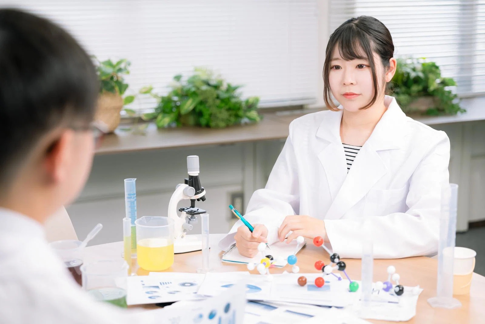
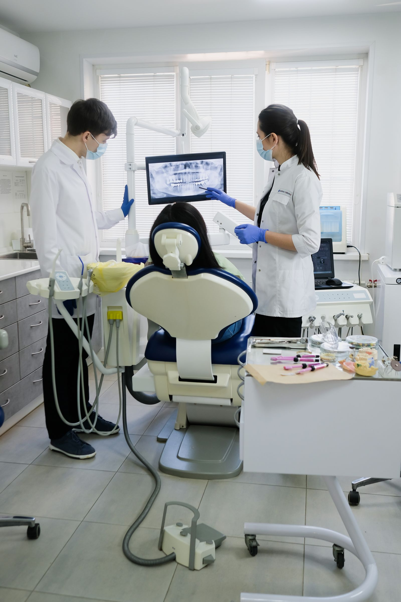
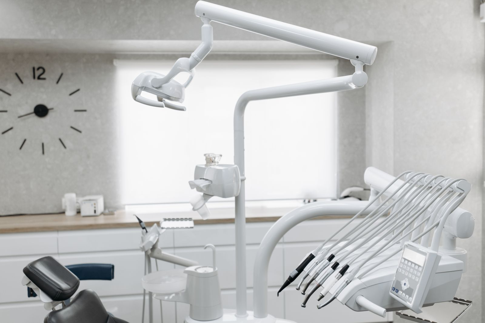

治療が苦手な方も、そうでない方も。桜丘の、家族のかかりつけ歯医者さん。
痛みの少ない治療と、むし歯にならないための予防を大切にしています。お子さまからご年配の方まで、どなたでも通いやすい医院を目指しています。
お知らせ
「歯医者は怖い、痛い」を、なくすために。
- 痛みの少ない治療
表面麻酔をしてから、細い針と電動注射器でゆっくり麻酔します。「痛かったら手を挙げてください」と毎回お伝えしています。
- 写真でわかる説明
お口の中の写真とレントゲンをモニターでいっしょに見ながら、治療の内容・回数・費用の目安をご説明してから始めます。
- 土日も19時まで診療
平日は19時まで、土日も診療しています。お仕事や学校のあとでも、ご家族そろっての通院でも、通いやすい時間に。
- お子さま連れも安心
キッズスペースとベビーカーのまま入れる個室。保育経験のあるスタッフがおりますので、治療中もお子さまをお預かりできます。
診療時間
| 月 | 火 | 水 | 木 | 金 | 土 | 日 | 祝 | |
|---|---|---|---|---|---|---|---|---|
| 9:30〜13:00 | ● | ● | ● | ／ | ● | ● | ● | ／ |
| 14:30〜19:00 | ● | ● | ● | ／ | ● | ★ | ★ | ／ |
★ 土日の午後は 14:30〜17:30 ／ 最終受付は診療終了の30分前 ／ 休診日：木曜・祝日（年末年始・お盆・学会参加に応じて臨時休診あり）
診療案内
当院は保険医療機関です。保険診療を基本に、ご希望に応じて自費診療にも対応しています。むやみに自費治療をおすすめすることはありません。

むし歯・歯周病の治療
できるだけ削らない、神経を残す治療を。歯周病は早めの治療と定期的なケアで守ります。

予防歯科・クリーニング
3か月ごとの検診とクリーニング。担当の歯科衛生士が毎回同じ方を担当します。

小児歯科
まずは診療台に座る練習から。フッ素塗布とシーラントでむし歯を予防します。

矯正歯科
月2回、矯正専門の歯科医師が診療。お子さまからマウスピース矯正まで。相談は無料です。

ホワイトニング
ご自宅で行うホームと、医院で行うオフィス。歯の状態を確認してからご提案します。

入れ歯・インプラント
合わない入れ歯の調整から、インプラントのご相談まで。噛めると、食事が楽しくなります。
初めての方へ
初診の日は、いきなり削ることはしません。まずお話を聞いて、お口全体を調べて、治療の計画をいっしょに決めます。所要時間は60分ほどです。
ご予約
WEB予約は24時間、お電話は診療時間内に。痛みが強いときは当日枠をご案内します。
受付・問診票
保険証（またはマイナンバーカード）とお薬手帳をお持ちください。問診票はWEBで事前記入もできます。
検査・お口の写真
レントゲンとお口の中の写真を撮り、歯ぐきの状態を調べます。
ご説明・治療計画
モニターで写真を見ながら、治療の選択肢・回数・費用の目安をご説明します。応急処置は初日に行います。
- 保険証（またはマイナンバーカード）
- お薬手帳（お持ちの方）
- 診察券（再診の方）
- 医療証（お子さま・お持ちの方）

はじめまして。院長の小野寺ひかりです。
子どものころ、歯医者がこわくて泣いていた私が歯科医師になったのは、「こわくない歯医者をつくりたい」と思ったからです。
治療は、その人の生活に合わせて選ぶものだと考えています。通える回数、かけられる費用、大切にしたい歯。それをうかがってから、いっしょに決めていきましょう。桜丘のみなさんの「かかりつけ」になれたらうれしいです。
東京医科歯科大学歯学部 卒業／都内の歯科医院で勤務医として9年、小児歯科と予防を中心に診療／2019年 ひだまり歯科クリニック 開院／日本小児歯科学会・日本歯周病学会 所属
スタッフ

佐藤 真衣歯科衛生士
定期検診は毎回同じ衛生士が担当します。前回の写真と見比べてお話しします。

高木 なつみ歯科衛生士・保育士
お子さまの歯みがき練習と、治療中のお預かりを担当しています。
受付スタッフ受付・歯科助手
予約の変更、保険のこと、費用のことなど、気になることは受付でお気軽にどうぞ。
院内
2019年開院。診療室はすべて個室で、となりの音や会話は聞こえません。




被ばくの少ないデジタルレントゲン。撮った写真はその場でモニターに映してご説明します。
器具は患者さまごとに滅菌。グローブ・コップ・エプロンは使い捨てです。
入口から診療室まで段差がありません。ベビーカーや車いすのまま診療室に入れます。
アクセス
東京都世田谷区桜丘 2-13-7 1F
- 最寄り駅
- 小田急線「桜丘駅」北口より徒歩3分
- 道順
- 北口を出て郵便局の角を左へ。コンビニの向かいの建物の1階です。
- 駐車場
- 建物裏に2台。満車の場合は近隣のコインパーキングをご利用ください（駐車料金をお渡しします）。
- 電話
- 03-1234-5678
当日でもお気軽にご予約ください
急な痛みや詰め物が取れたときも、まずはお電話を。WEB予約は24時間受け付けています。
24時間WEB予約03-1234-5678